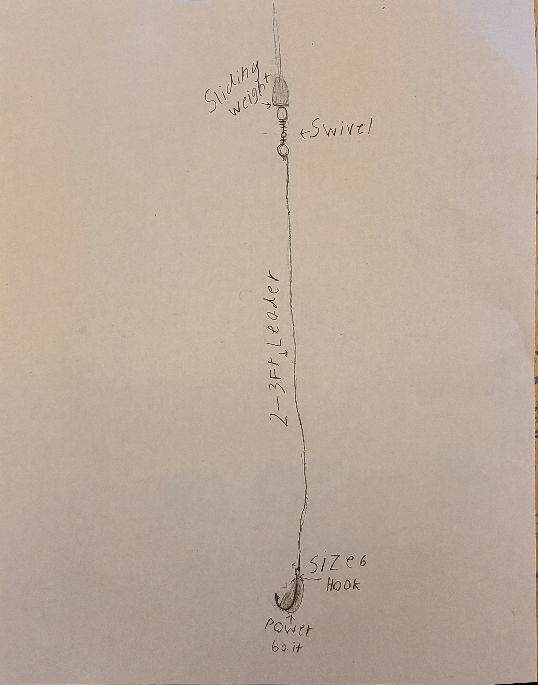
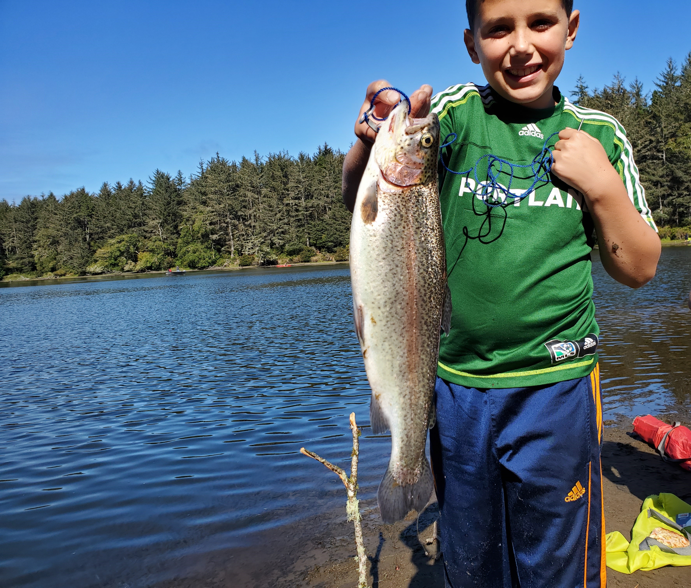
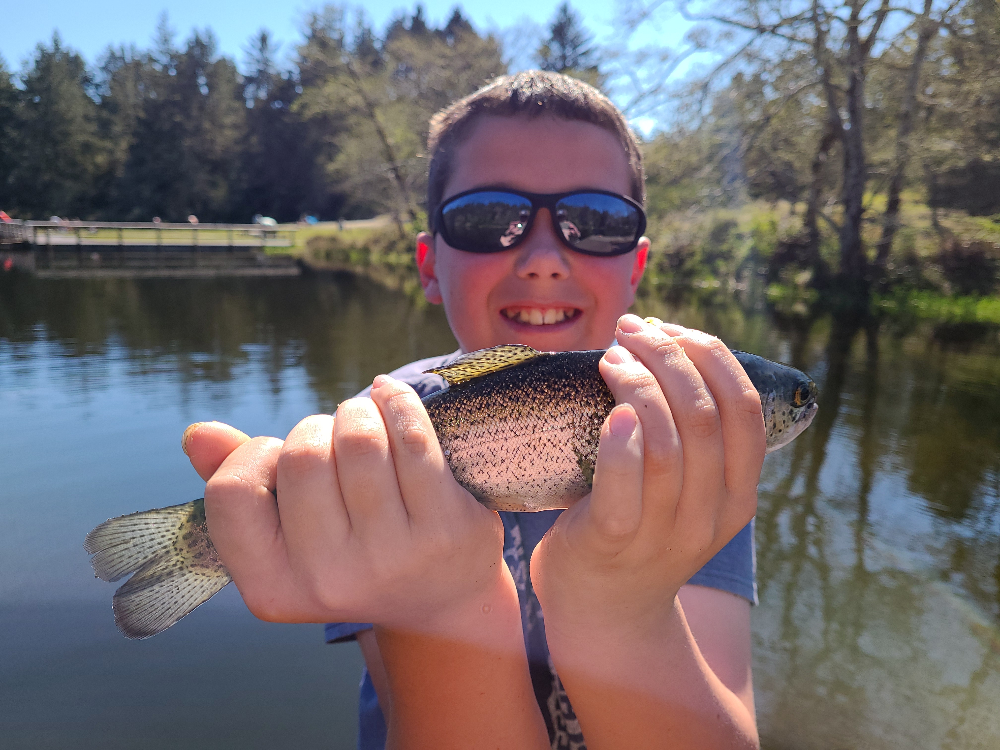
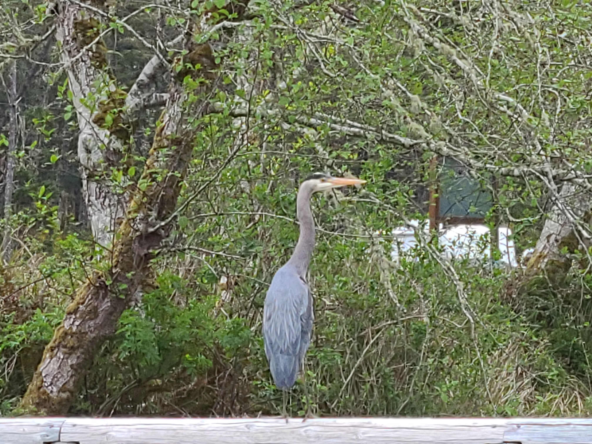
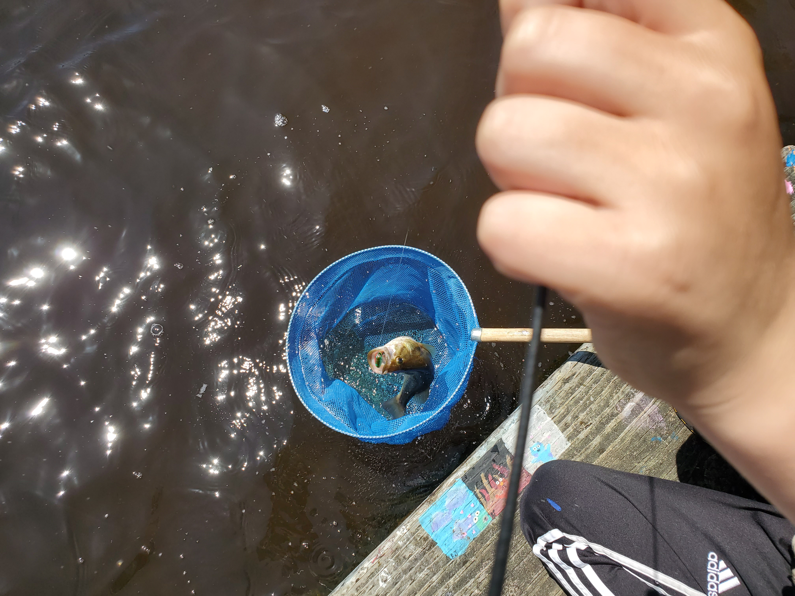
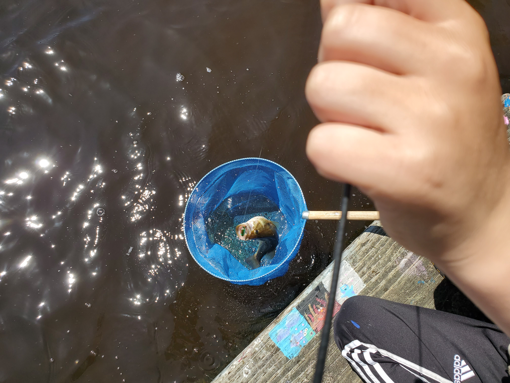

This website is about fishing for trout near Warrenton and Astoria, Oregon. It includes:
1.Lake Powerbait Setup
2.River jig Setup
3.Fishing locations
4.Recipies and More
Coffenbury lake
Coffenbury Lake is a great lake for beginner and experienced fisherman. It is located in Fort Stevens State Park. It is stocked with hatchery rainbow trout,steelhead
and trophy Trout. The best method for catching hatchery trout at Coffenbury is using the PowerBait set up. The best locations to use power bait are the railing by the dock in the middle and on the right corner of the dock by the boat launch.


left: PowerBait setup right: me with trophy trout caught on chartreuse PowerBait
PowerBait
PowerBait can be bought at most sporting goods stores including:
These are great spots to get PowerBait and lures. They have a large selection of fishing baits and lures. (It is best to put small amounts of PowerBait on the hook at a time because the fish like to nibble it off).


left me with one of my 8th fish that day on garlic PowerBait. right heron hunting for fish
Klaskinine River
The Klaskinine River County Park is located near Astoria, Oregon. It is a great place to fish for salmon and steelhead. It is a better spot for more experienced fisherman because the best spots are difficult to reach. The best thing to use here is a bobber and jig for steelhead and salmon. Here are some good spots to get jigs:
right me with steelhead caught on a jig. left jig setup.
Cullaby Lake
Cullaby Lake is located near Warrenton, Oregon. In the late spring and summer there are a lot of bluegill,largemouth bass and catfish. (I would not recommend eating fish out of Cullaby because there are frequant algae blooms and the water is kind of grose.)
There are two spots to fish on the lake; Carnahan County Park and Cullaby Lake County Park. The best setup to use at Cullaby is a bobber and worm or a lure. Here is a good lure to use at Cullaby.

 
